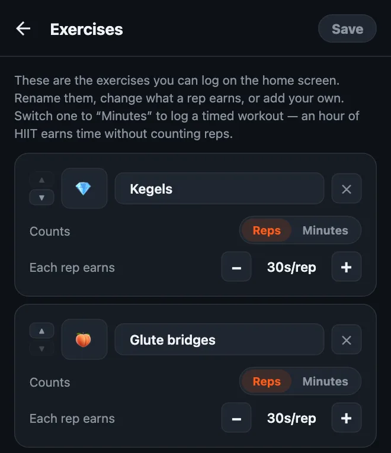
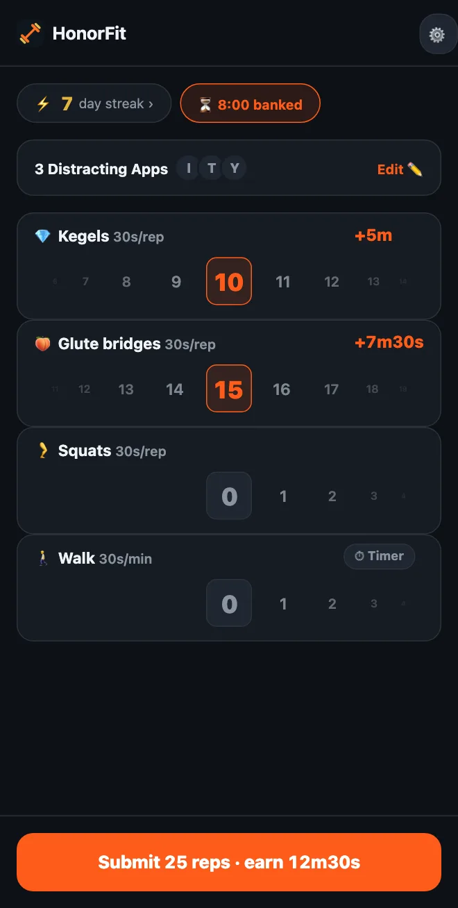

Do kegels to unlock your phone
Hey y'all! I built HonorFit because I wanted pushups standing between me and Instagram, without propping my phone up so a camera could count them (doing that at a gas station was not my finest moment lol). You do the reps, you log them yourself, and your apps unlock.
Pushups aren't everybody's thing, though. And one of the best fits for this whole idea isn't pushups at all: kegels and glute bridges. Here's why, and how to set it up.
Why kegels fit the honor system so well
Nobody can see a kegel. Not the person next to you on the bus, not your coworkers, and definitely not a phone camera. An app that counts reps with the camera literally can't count these.
HonorFit doesn't try to. It runs on the honor system: you do them, you scroll the wheel to how many you did, done. So you can earn your TikTok time in a meeting, in line at the grocery store, or on the couch, and nobody's the wiser.
And it fixes the thing everybody says about kegels: “I know I should do them, I just forget.” If you reach for your phone a bunch of times a day (no judgment, me too), now every one of those is a reminder.
Glute bridges aren't invisible, but they're easy to do on the floor or even in bed, need no equipment, and pair really well with kegels.
How to set it up
Custom exercises are part of HonorFit Pro ($3 a month or $19.99 once in the US; the store shows your local price). The free version has pushups, situps, pull ups and squats. If you've got Pro:
- Tap the gear on the home screen, then the Exercises card.
- Tap ＋ Add exercise, tap the name, and call it Kegels.
- Add another and call it Glute bridges.
- Set Each rep earns with the −/+ buttons (my suggestions are below).
- Optional: tap the emoji square to pick an icon. I went with 🧘 for kegels and 🦵 for bridges. The picker has a set of about 40 fitness emoji, so no 🍑, sorry!
- Remove the ones you won't use with the ✕ (pull ups, maybe?), and tap Save.

The full walkthrough of the editor, including timed workouts, is in how to customize your exercises in HonorFit.
How much screen time should each rep earn?
Here's what I'd start with:
| Exercise | Each rep earns | A typical set earns |
|---|---|---|
| 🧘 Kegels | 30 seconds | 10 kegels = 5 minutes |
| 🦵 Glute bridges | 30 seconds | 15 bridges = 7m30s |
| 🚶 Walk (timed) | 30 seconds per minute | 20-minute walk = 10 minutes |
So a set of 10 kegels plus 15 bridges gets you about 12 and a half minutes. Tweak from there. If it's too easy to rack up time, drop the values. If you catch yourself logging reps you didn't do, the price is too high, so lower it.

One thing about kegels: more isn't better. Health sites like MedlinePlus and Cleveland Clinic generally talk about sets of around 10, a few times a day, and say overdoing it can leave the muscles too tight. So please don't turn this into 100 kegels for an hour of YouTube! That's why I'd give them a decent value per rep and let glute bridges, squats or a walk cover the bigger stuff.
The basic moves
I'm an app developer, not a trainer or a physical therapist, so this is just the general idea. The links above have proper instructions.
- Kegels: squeeze the muscles you'd use to hold in pee, hold for a few seconds, then fully relax for a few seconds. That's one rep. Keep breathing, and try not to clench your stomach, thighs or butt. (Stopping your pee midstream is a way to find the muscles once, not something to practice regularly.)
- Glute bridges: lie on your back with your knees bent and feet flat. Squeeze your glutes and lift your hips until your body makes a straight line from shoulders to knees, pause, and lower back down slowly. That's one rep. Some people like to add a kegel at the top.
If you're pregnant, postpartum, have pelvic pain, or kegels hurt, check with your doctor or a pelvic floor physical therapist first. They can tell you what's right for your body, and sometimes the answer is “not kegels right now”, which is fine. You can set up HonorFit with whatever they recommend instead.
A few tips
- Keep three or four exercises. Something like Kegels, Glute bridges, Squats and Walk covers sitting, lying down and being out and about. Each one gets its own wheel, so fewer is easier.
- Use a timed workout for the days you get out. Switch an exercise to Minutes (or tap the Walk or Yoga suggestion) so a walk or a class earns time too.
- Saved routines (Pro, turn it on in Settings) let you save up to 3 rep combos, like “10 kegels + 15 bridges”, and apply one with a single tap.
- Block one or two apps, not everything. Whichever one eats your evenings.
If kegels aren't your thing either, I wrote up some low-impact and desk-friendly options too.
HonorFit Blocker is a free app blocker for iPhone and Android. Honor system, no camera, nothing leaves your phone. Custom exercises like kegels come with Pro. Maybe some of y'all will enjoy it!